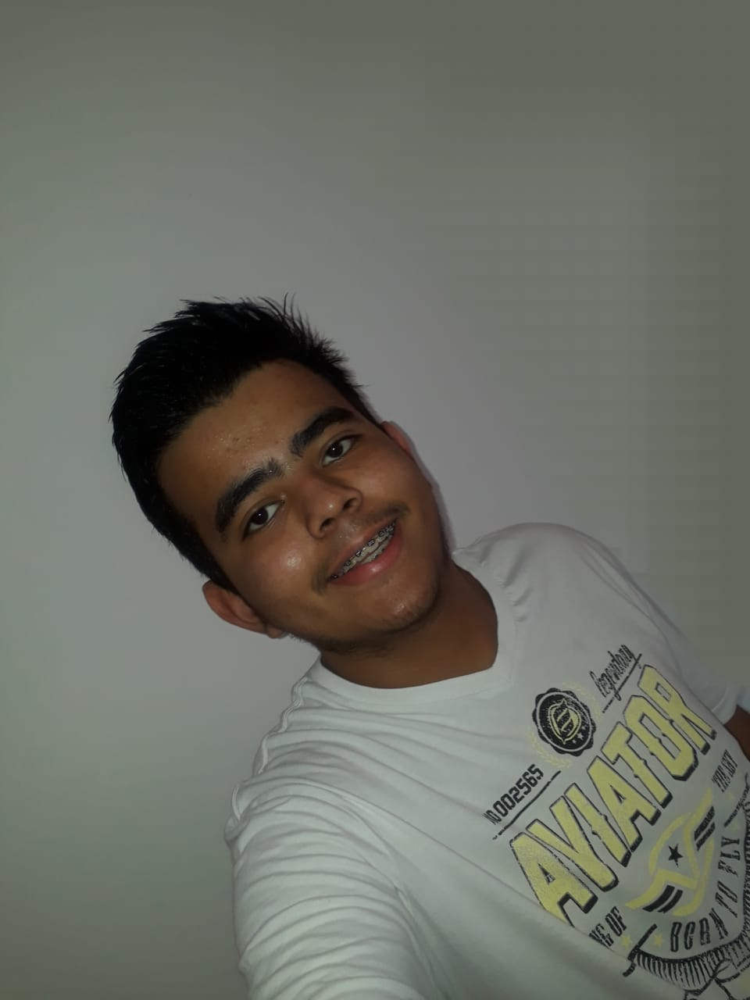

Alunos

Luiz Gabriel Lima Dias
Eu sou o Luiz atualmente tenho 16 anos, fui aprovado no IFMS a 2 anos e desde então faço o curso técnico.

Thiago Araujo de Oliveira
Eu gosto de oprimir os 5 adversarios embaixo do nexus com o aurelion sol infligindo muito dano nas horas vagas.(kkkkkkkkkkkkkkkkkk)
Professores

Delmir da Costa Felipe.
Possui graduação em Quimica Bacharelado, Licenciatura em Quimica e Mestrado em Educação. Tem experiência na área de Química, com ênfase em Ensino de Química
Lattes

Fabio Luiz Faria da Silva
Possui graduação em Engenharia da Computação. Tem experiência na área de Ciência da Computação, com ênfase em Análise e Desenvolvimento Web.
Lattes